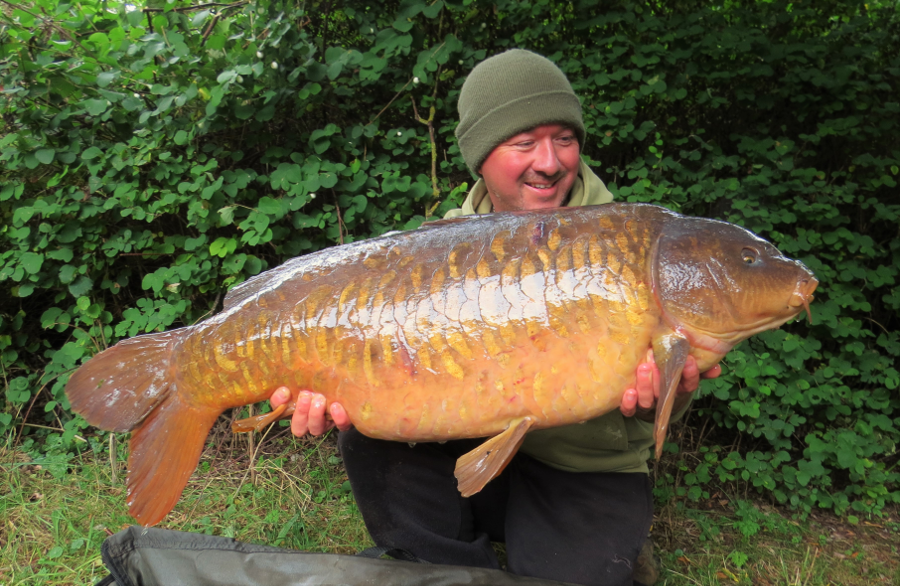

About
All our products are produced exclusively for us by Jason Hayward
Jason is one of the most highly respected Carp anglers in the country, and is considered to be one of the most "thinking anglers" around today. Jason has written dozens of highly acclaimed technical articles for all the best monthly Carp magazines as well as a number of "guest" chapters in some of the best selling Carp books.
Jason is considered by those that know, to be the original and leading authority on the subject of hook sharpening and Jason's hooks are considered to be the best available and are used by many well known and highly successful carp anglers from all over the UK.
Carp bait is also one of Jason's passions, Jason has always formulated and designed his own boilies. Jason worked for many years as an active consultant for a well known bait company formulating many successful recipes and attractor packages before leaving to do his own thing where he could keep control on the quality of ingredients used and inclusion levels of the attractors.
You the customer can be reassured that with this wealth of knowledge behind us, that you will be using some of the best carp catching products available.